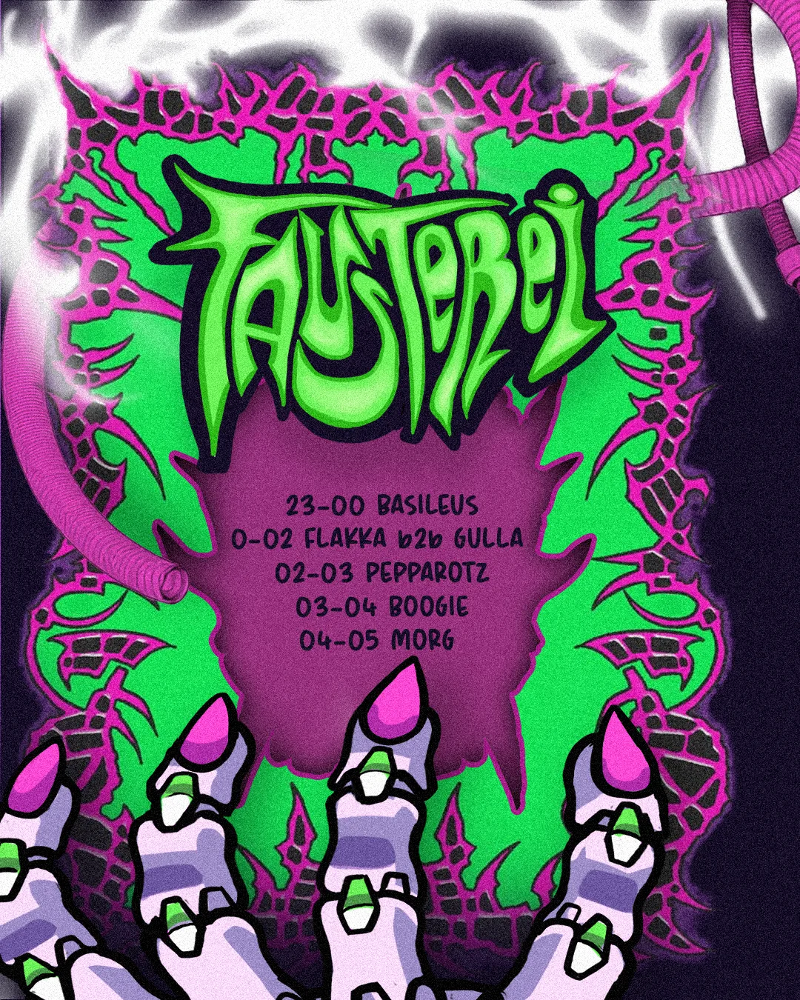
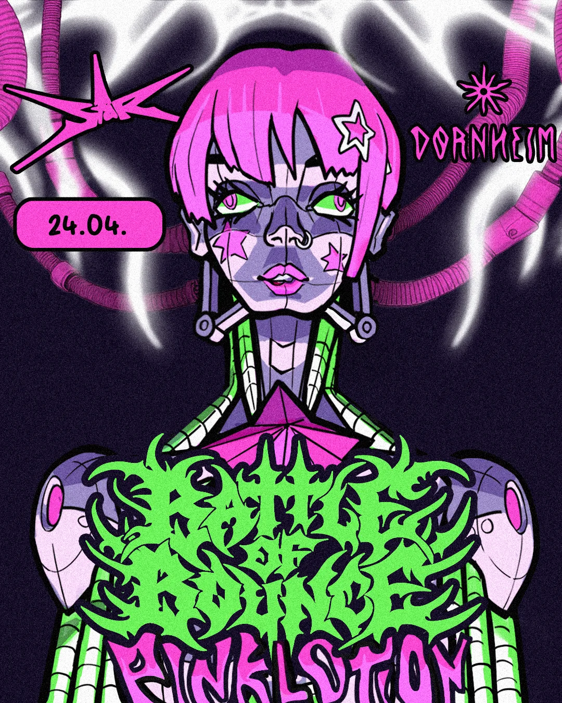
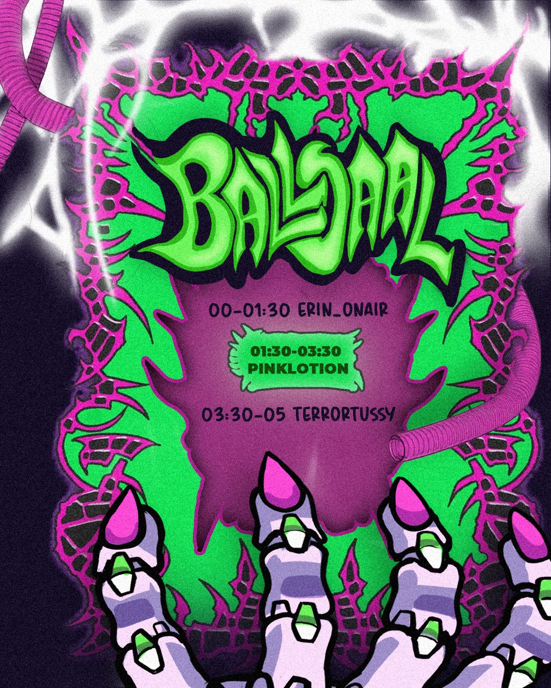
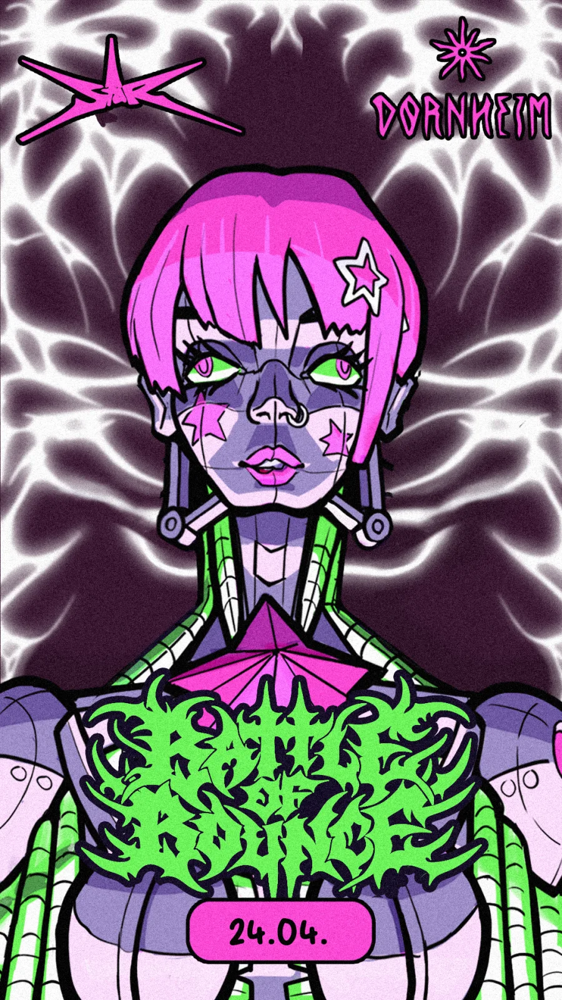
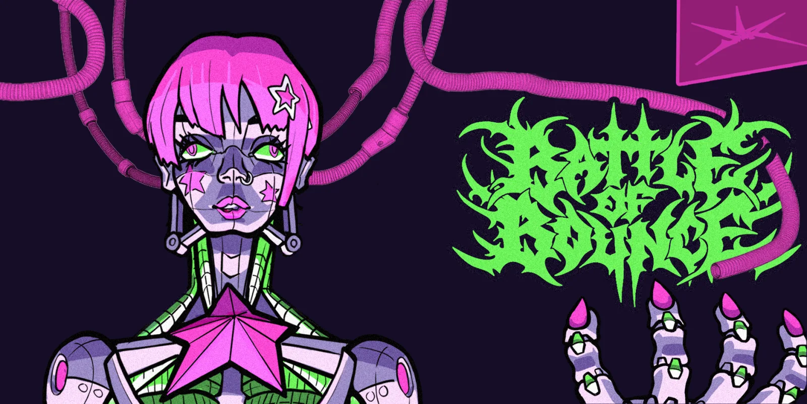

Bob4 — Instagram-Feed & Event-Banner
Instagram-Set für Bob4: dreiteiliges Feed-Raster, Story-Grafik und Event-Banner im gleichen Bildvokabular.





Ähnliches Projekt geplant? Anfrage schreiben oder Leistungen ansehen.